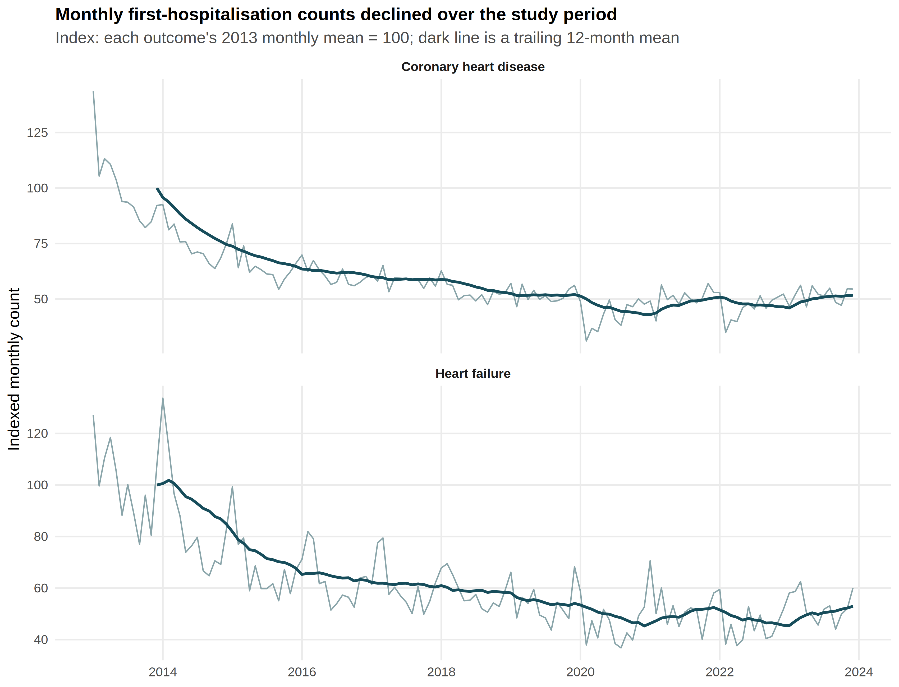
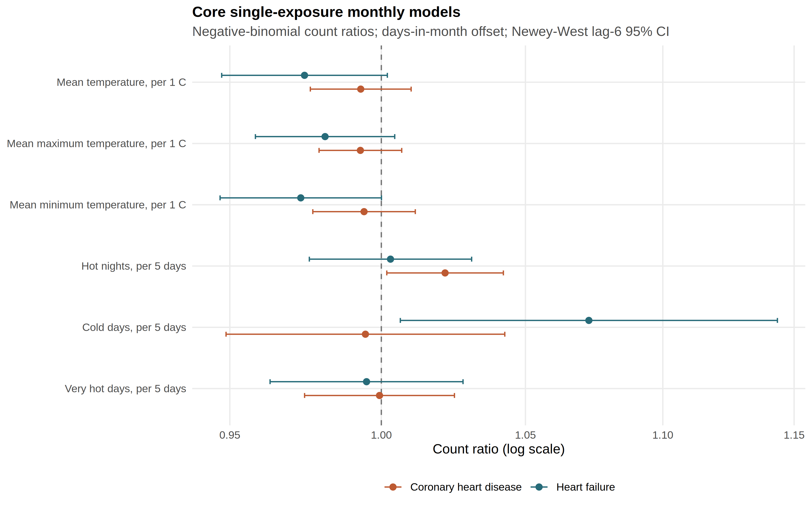

Bishai Lab · Thursday 27 August 2026
Hong Kong, 2013–2023. A lab introduction and the Laidlaw Stage 3 report.
Shen Ruililin (Bob) · Laidlaw Scholar intern
Before the science
What we asked. What file arrived. What we can and cannot claim.
This is the Laidlaw Stage 3 research report, due 31 August. At the end I will ask Professor Bishai for the supervisor block.
Part A · Where this sits
| Lab object | Estimand | What it is not |
|---|---|---|
| Jingwen Liu et al., 2020 Jasmine |
Daily mortality attributable fraction, Hong Kong, 2006–2016 | Not hospitalisation; not our CHD/HF counts |
| Zhenyuan Liu et al., 2026 Roro |
Modelled heatwave excess deaths, 2014–2023 | Not our first-event counts. Do not quote that paper’s death totals as this study. |
| This intern project | Monthly CHD and HF first hospitalisation after first diagnosis, T2D/HTN, 2013–2023 | Not AMI; not principal-diagnosis; not daily DLNM; not stroke |
Part A · Direction
A mortality attributable fraction, a modelled excess-death total, and a monthly count ratio cannot be substituted for one another.
Part B · How the summer ran
Part B · The governed file
Monthly means 1,183.0 (CHD) and 224.9 (HF).
Indexed first-event counts fell across the decade. Without still-at-risk person-time these are not incidence.
Stroke remains undelivered. Gate 3 is open.

Part C · The Stage 3 paper
Are monthly thermal contrasts associated with monthly first-hospitalisation counts in this cohort?
Part C · Methods in one breath
CHD and HF, each against six thermal measures:
If the 24 August PDF is open, these twelve fits are Model 1. If the 22 August PDF is open, stay with “twelve comparisons.” Model 2 and Model 3 are specified, not fitted. No invented health coefficients.
Part C · Results

Twelve comparisons, Newey–West lag 6. All q > 0.19. If the figure title still says “core,” say Model 1 / twelve comparisons.
Part C · Two largest estimates
CHD · hot nights / 5 days
1.022
(1.002–1.042) · q = 0.192
HF · cold days / 5 days
1.073
(1.006–1.144) · q = 0.192
Part C · The line that must be said in full
What remains: a defined first-event outcome, a complete twelve-comparison panel, four uncertainty methods, and a documented refusal of daily coefficients.
If asked “so what did you find?”: we found the limits of this extract, and two residual signals that do not survive correction. Gate 3 remains open.
Part D · Expectation
Not because it discovers a new thermal effect.
What is new for this extract:
Aggregation-identifiability is a contribution type for the journal file. It is not Gate 3. Basagaña and Ballester already treat aggregated outcomes.
Part D · Daily extension
Part E · Two files
Programme report. Sole-author, about 2,000–3,000 words.
Due 31 August. Form 2a is for this file.
Poster is 15 September. No signature on the poster today.
Journal manuscript. He writes weather Methods.
Bob pastes. Do not email a competing Word copy.
His review does not decide form 2a.
Part E · Hogan
Part E · Not this signature
Park these after the form, or for a later slot. They are real. They are not the Laidlaw bar.
Part F · The ask
Not journal acceptance. The report matches the direction you set; states the missing stroke file and the missing admission cause; does not overclaim (every q > 0.19); and exists as a PDF a programme reader can follow.
I would be grateful if you would complete the supervisor block — rating, comments, signature — on the Laidlaw form. I have left those fields blank. The poster is 15 September and does not need a signature today.
If you want to take it away: Friday 28 August. Report due 31 August.